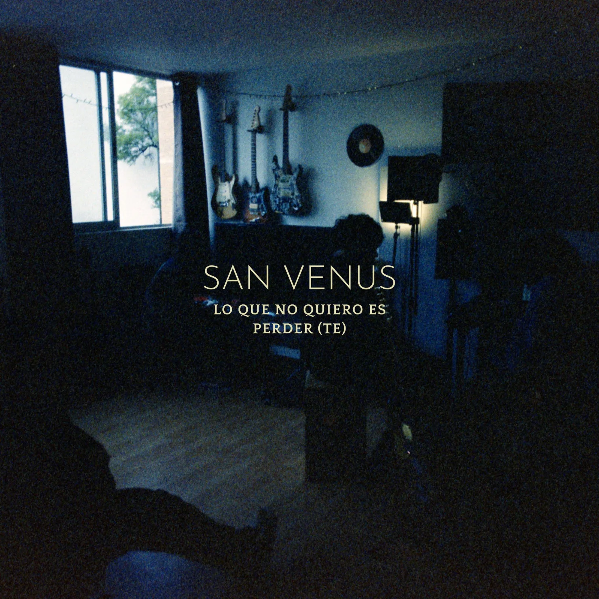
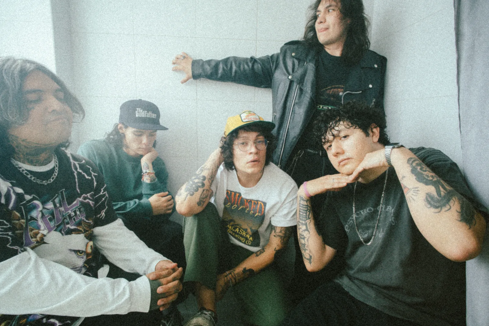

SAN VENUS
"LO QUE NO QUIERO ES PERDER(TE)"

Hay canciones que nacen desde la calma y otras que salen justo cuando uno todavía está tratando de entender qué pasó. La banda tapatía San Venus pertenece a la segunda categoría con "Lo Que No Quiero Es Perder(te)", el segundo sencillo de su próximo EP, Solo Por Hacernos Mal. La banda presentará este sencillo y más música el 12 de septiembre en Vans Warped Tour México.
El tema es, en palabras de la banda, un berrinche a una relación fallida; una relación que parece haberse arrebatado injustamente y que habla desde la inmadurez emocional y el miedo al cambio, pero que también intenta ponerse en el lugar de la otra persona. Más que buscar respuestas, la canción se queda en ese momento incómodo en el que todavía existe el deseo de estar con alguien aunque esa persona ya no esté.
"Lo Que No Quiero Es Perder(te)" fue la última canción que San Venus sumó a Solo Por Hacernos Mal. Al principio solo existía como una maqueta, pero cuando la banda se sentó a escucharla y pensar qué le hacía falta, entendieron que ahí estaba el cierre perfecto para el EP. A partir de esa primera idea, trabajaron en hacer que la canción se sintiera todavía más grande al momento de escucharla, sin perder la emoción que tenía desde el principio.

Para este nuevo material, San Venus decidió apostar por una interpretación mucho más directa y fiel a lo que sucede cuando la banda toca junta, evitando ediciones o cortes importantes que pudieran "maquillar" las canciones. Boogie y Kelao, guitarristas de la banda, participaron durante todo el proceso, no solamente desde la interpretación, sino también en la búsqueda del sonido. El resultado es un San Venus que se siente más completo y humano, desde las guitarras y la base rítmica hasta la expresión de las voces.
El sencillo también tiene una historia particular detrás de su grabación. Hace unos meses, la banda estrenó su propio estudio, La Catedral, y decidió inaugurarlo encerrándose durante una semana completa para grabar canciones. Los primeros días estuvieron dedicados a la base rítmica y posteriormente trabajaron guitarras y voces. Fue dentro de ese primer bloque de grabaciones donde terminó de tomar forma "Lo Que No Quiero Es Perder(te)".
Una de las noches, durante un descanso de las sesiones de voces, la banda se puso a ver a Juan Gabriel en el Palacio de Bellas Artes. La manera en que interpretaba sus canciones, utilizando recursos como el llanto contenido, la risa y una enorme expresividad vocal, llamó especialmente su atención y terminó convirtiéndose en una referencia para la interpretación de este sencillo.
💬 ELEGIDA POR SUS FANS
Fueron los propios fans de San Venus quienes la eligieron como el siguiente sencillo durante una listening party privada, en la que pudieron escuchar anticipadamente el nuevo material. Así, "Lo Que No Quiero Es Perder(te)" llega respaldada por la respuesta de quienes han acompañado a la banda durante este proceso.
Con "Lo Que No Quiero Es Perder(te)", San Venus busca que quien la escuche pueda sacar algo que todavía lleva dentro: ese sentimiento de querer estar o seguir queriendo a alguien aunque esa persona ya no esté.